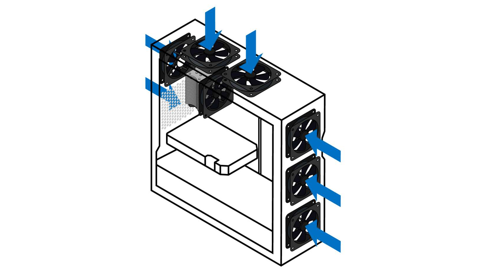

Highlights
The impact of heat.
CPU/GPU
Other hardware
Airflow and dust
Keeping cool
PC cooling is a major factor to consider when building a PC.
This is common knowledge for many PC builders, but exploring why cooling is an integral part of a build can be useful, as is applying these principles to new builds.
The basics are simple: demanding workloads (like gaming) result in hardware generating heat. Overheating components can result in performance issues. An ideal setup keeps all of your components sufficiently cool and allows you to get the best performance from your system.
Heat is an inevitable byproduct of computer hardware operation, but too much heat can cause slowdown across your system.
If the CPU temperature is too high, for example, a mechanism will trigger that reduces performance in order to avoid damaging the processor. According to Mark Gallina, System Thermal & Mechanical Architect at Intel, “Intel® CPUs have very robust thermal management features that quickly adjust operating frequencies to reduce power when the system cooling solution is insufficient.”
This safety mechanism, sometimes referred to as dynamic frequency scaling, is useful in that it protects your processor from potential damage. However, this protection results in a performance cost when active. A better option is keeping the CPU cool enough that the mechanism doesn’t trigger in the first place.
Many laptops that use the latest Intel® Core™ processors utilize a feature called Dynamic Tuning. This process uses AI to predict workloads, and can increase or decrease CPU performance as needed in order to keep up with those workflows. This is all done automatically by the machine, without the need for any manual adjustment by the user.
Learn how overclocking can impact temperature
Users have some control over processor performance, via overclocking3 or underclocking. By modifying the voltage available to your CPU, either through the BIOS or with overclocking software, you can increase or decrease the speed of the processor, and, as a result, the amount of heat generated. Overclocking is usually undertaken to increase performance, but if lower power consumption or lower temperatures is a priority, underclocking can be worth exploring as well.
There are many ways to keep a CPU cool, from mineral oil to passive cooling, but by far the most popular solutions are air or liquid CPU coolers. These coolers offer a host of features and options for just about any use case, from desktops to portable systems. Laptops usually use sophisticated air cooling systems specifically designed for the smaller chassis and aren’t normally designed to be upgraded or replaced.
Correctly applied thermal paste is also a key part of any cooling solution, as it acts as a bridge between the CPU and the cooling plate of the CPU cooler.
Is your CPU in the ideal temperature range?
To ensure operation in the ideal CPU temperature range, head over to this page, look up your specific processor, head to the Package Specifications section, and check the “Tjunction” of the processor. If your CPU is near that temperature (which can be determined with temperature monitoring software such as Intel® Extreme Tuning Utility (Intel® XTU)), it’s time to start diagnosing potential issues. Start by ensuring your thermal paste is properly applied, that your CPU cooler is installed correctly, and that your system has adequate airflow.
If you want to find the ideal temperature for your CPU, but don’t know which one is in your system, there are a few ways to find out. The first is to open System Information in Windows* 10 (WINDOWS KEY+i). Then, go to the “System” section, and select the “About” tab on the left. Your processor information will be displayed under the “Device Specifications” section. If you’d prefer more detailed information such as live performance metrics, open the Task Manager (CTRL+SHIFT+ESC). Next, select the “Performance” tab, and then the “CPU” tab.
It isn’t just the CPU that requires temperature management. The GPU (graphics processing unit) is another critical component in a gaming PC and also needs to be adequately cooled. GPU cooling solutions are pre-installed and usually consist of fans installed in a shroud surrounding the graphics processor. There are also aftermarket solutions like liquid cooling blocks and custom air coolers available to advanced builders who don’t mind disassembling the graphics card for more customized cooling options.
GPU and CPU temperature should be prioritized, as these are the primary processing centers of a gaming PC. They shouldn’t be the only considerations, however.
Any component that uses electricity — meaning just about everything in a PC — creates heat when in use. Most have a cooling system of some kind already integrated. RAM usually comes with metal heatsinks designed to disperse heat, and power supplies usually have a fan designed for this purpose as well. Even motherboards have heatsinks for components that get hot, and modern options sometimes feature heat shields for M.2 storage in order to prevent potential slowdown caused by overheating.
But relocating heat away from a component is only half the battle. If all the components are dispersing heat into a small area, such as the inside of a PC case, the ambient temperature can quickly rise. If the case is not properly ventilated, the hot air can result in the system overheating, and performance can suffer as a result.
That’s where airflow comes in.

A good PC case should account for airflow, either by optimizing fan placement, or by providing airflow options to the builder. Many cases come with fans already installed, but even those that don’t will have areas to install fans — usually on the front, the back, or near the top. PC fans can vary drastically in design and size, from a common 120mm case fan to more specialized configurations with varying sizes, depths, noise levels, and aesthetic considerations.
Though PC case fans share a purpose, different fans are designed for different scenarios. Static pressure fans, for example, are designed to move small amounts of air shorter distances, like through a heatsink. Fans designed for higher airflow are more focused on the amount of air that can be moved.
Something to remember when installing an airflow solution: PC fans pull air past the motor housing, meaning that any sticker, wiring, branding, or protective grille is most likely on the back of the fan. This is the side that will expel air, so be sure to install accordingly.
Use caution when cleaning fans
Users have some control over processor performance, via overclocking3 or underclocking. By modifying the voltage available to your CPU, either through the BIOS or with overclocking software, you can increase or decrease the speed of the processor, and, as a result, the amount of heat generated. Overclocking is usually undertaken to increase performance, but if lower power consumption or lower temperatures is a priority, underclocking can be worth exploring as well.

When case fans pull in more air than they push out, it creates positive pressure in the case. When fans are pushing out more air than they are pulling in, the result is negative pressure. If a system has negative pressure, air will be pulled in through the small gaps and vents in the case. This can also pull in nearby dust, which means more frequent cleaning to keep the system running optimally.
A positive pressure configuration helps control dust, as air will be pushed out of any gaps and vents in the case. Dust may still be brought in by the air coming through the intake fans, but properly placed filters can help mitigate this. Positive air pressure is better for reducing dust overall by localizing it to areas with filters, which can then be cleaned before ever entering the PC.
That said, too much positive pressure can force the PC fans to work against one another as they push air into the limited space of the chassis. The ideal configuration is a balance, with a slight emphasis on positive pressure to prevent dust build up. Builders can experiment with positive and negative air pressure by changing the placement, orientation, and speed of the fans in a case to find the appropriate airflow setup for their hardware configuration.
Visualizing airflow
Airflow is invisible, but a simple way to visually identify the direction fans are moving air in a case is with a stick of incense. Carefully bring the burning incense near any intake or exhaust, and observe the direction the smoke moves. This can be a useful visual aid, but be sure to take appropriate precautions with any ash or embers from the incense.
Looking at other builds that use a specific case can be useful for mapping out an ideal airflow strategy. Online communities are an excellent place to ask questions, and to find systems that use similar hardware. Studying these systems and the airflow solutions they implement can be a useful reference for your own build.
Though a well-implemented fan setup and the proper cooling hardware will do most of the heavy lifting, there are other factors that can impact system temperature.
Proper cooling requires some forethought when putting together your system, but if you follow the guidance above, it doesn’t need to be difficult. An ideal cooling setup works to keep every component in a system at its optimal temperature, and should be designed to compliment the specific hardware configuration in that system.
Carefully planning your PC cooling isn’t just good practice. It’s also important for getting the best performance from your build, and for potentially increasing the lifespan of your components.
Explore gamer resources for articles, news, and how to's from Intel to provide gamers with the knowledge to elevate gaming experience and performance.
Explore liquid cooling vs air cooling options for CPU thermal management. Compare the efficacy, feasibility, and cost between these cooling solutions.
There are a lot of options out there when it comes to gaming CPUs. Knowing what features to look for can help you find the right one.
Product and Performance Information